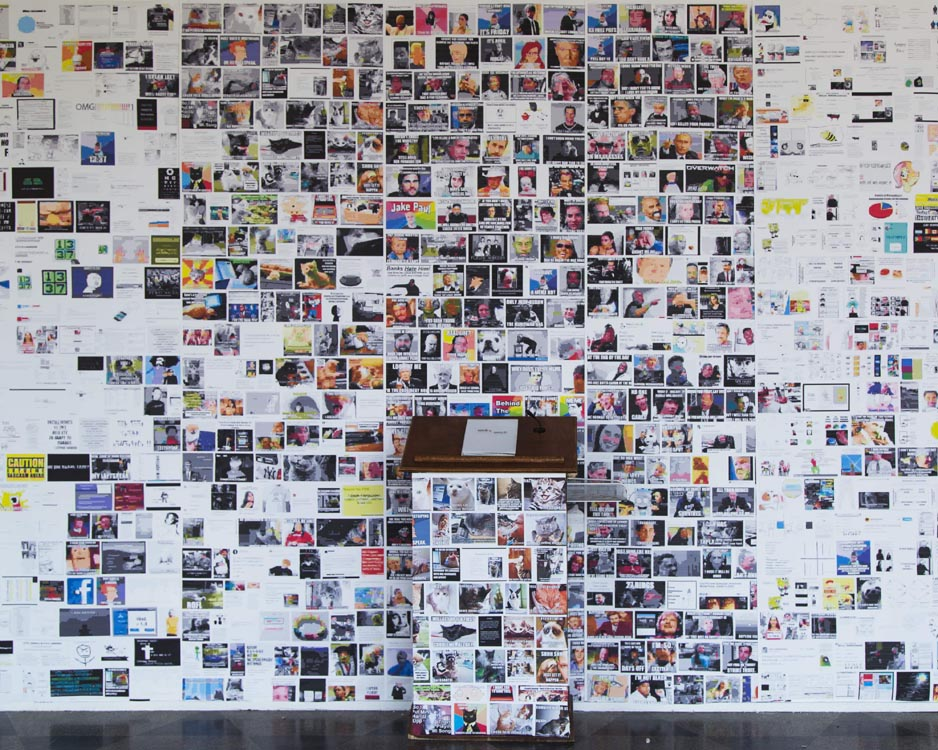
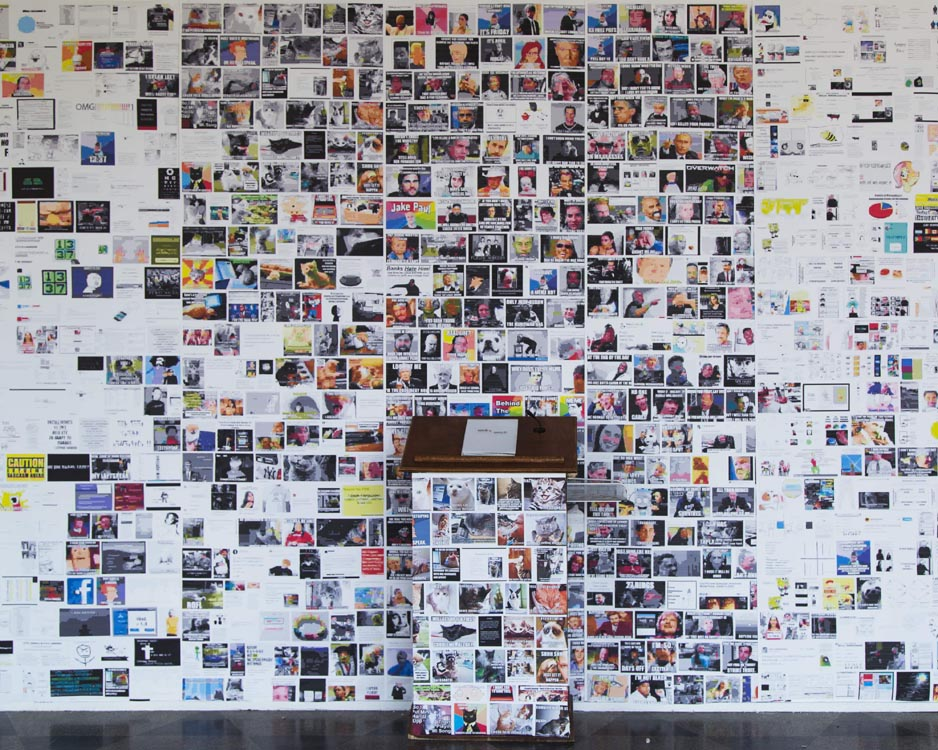
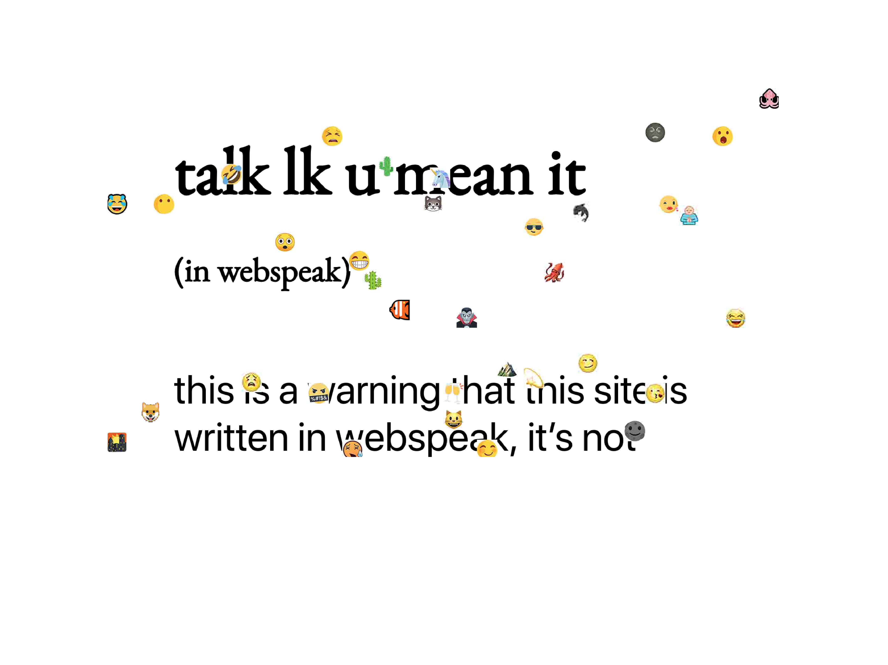
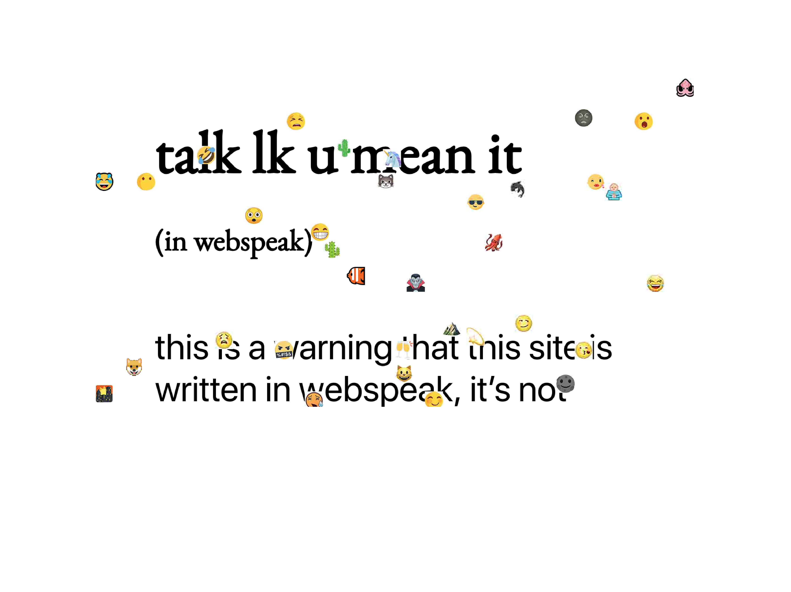

first of all, u can read this book $ 4 F R E E $ as a pdf (recommended) or on the website talklkumeanit.com (less recommended). or email me with 300 dollars and ill make u a physical copy lol
i've been interested in memes and internet stuff since i was a middle schooler surfing icanhazcheeseburger. i decided to pursue web culture from an academic lens, when, as a junior in college, i wrote a meme textbook. following this, i knew i wanted my thesis to be about web culture and since i did memes already, i thought i should focus on another form of communication on the web : webspeak. talk lk u mean it, my senior thesis, is a book about the language of the internet and why it matters.
so, i spent a month reading basically any research paper i could find relating to webspeak or internet culture ( for ex, i read a 10 page paper about the use of '>' in a specific world of war craft chat). then, i wrote a book. well, i guess it's not an Official Published Book (only one physical copy exists, which i made by hand by the way), but anyway, it traverses the history of webspeak, starting at 1337 and building up to current day. as the book developed, i found myself getting really interested in linguistics and understanding the components of webspeak using linguistic terminology. the book also breaks down important things like the iterative and memetic nature of language and prescriptive vs descriptive linguistic approaches.
the book is aesthetically driven both by traditional academic theses and by the inherent chaos of the web (chaos is another thing i've always been obsessed with). to generate some chaos, the book progressively degrades using jpeg compression, an iconic aesthetic on the web. additionally, the pages are also increasingly covered with increasingly random emojis. regarding the academic inspiration, the book is thoroughly researched like a traditional thesis and takes a physical form, rather than a website (convenient website link).
the book itself uses a hardcover case in binding (i sewed it myself). it uses four different types of paper to denote the different ages of webspeak. the paper grain also reminded me of the artifacts generated by jpeg compression.
i also made an installation to present my book at the thesis show (i also uh did the branding for the show). like the book, it iterates on academic thesis presentations with web aesthetic. presented on a podium (you would not BELIEVE how hard it was to track down a podium), the book stands before five huge panels representing an era of meme culture, each compressed to reflect the book. in fact the number one question i got asked at the show, was did you notice that the wall is pixelated, as if i would print out 50 feet of paper without noticing... i also made a ton of stickers and business cards that used compressed emojis.
even though i just said that stuff about presenting my thesis physically to mimic academic theses, this is a project about the internet and therefore must also exist digitally. so i coded a website in html/css/js which is talklkumeanit.com. some of the pages have emojis that appear randomly and cover the screen. you can click to make them disappear, but i never figured how to toggle the function on and off (and realistically idk if i'm going to come back to this website so srry read the pdf instead).


 

 

{kind=link}